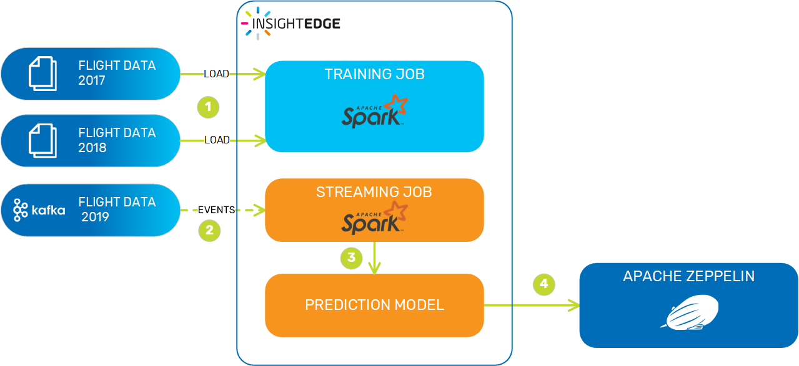
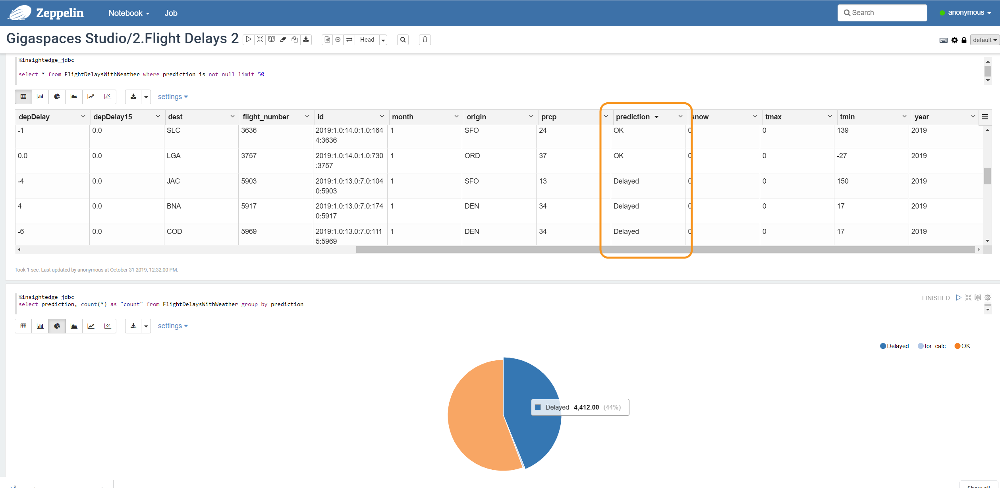

| Author | Product Version | Last Updated | Reference | Download |
|---|---|---|---|---|
| Yoram Weinreb | 15.0 | January 2020 | Flight delay prediction model |
The Flight Delay Prediction sample application uses flight and weather data to make binary predictions (yes/no) about which flights are likely to get delayed. Flight data includes information like the month, day and departure time, in addition to origin and destination airports, which is fed into an ML model (in our case the Random Forest model) to train it for the most accurate results. The feature vector is then supplemented with weather-related data such as rain, wind and temperature.
The prediction model is prepared as follows:

The prediction data are displayed in both table and graph format in Apache Zeppelin.

Your local machine should have a minimum of 1 GB free space to install the necessary software to run the Flight Delay prediction model, and 5 GB of RAM to run it.
Installing and configuring the prediction model involves the following steps:
InsightEdge provides Apache Zeppelin as part of its standard software package. To use the Flight Delay prediction model, you need the INSIGHTEDGE-GETTING-STARTED web notebook, along with the INSIGHTEDGE-GETTING-STARTED-2 notebook. Configure the following:
Copy the demo notebooks from the Zeppelin notebook folder in the InsightEdge installation directory:
$ cp -R ./zeppelin_notebooks/* <InsightEdge Install Dir>/insightedge/zeppelin/notebook/Set the Kafka server URL for the prediction model:
$ export KAFKA_URL=192.168.99.102:29092Using the Flight Delay prediction model requires feeding data to InsightEdge and then querying it to create the predictions. This data is contained in the following files that must be downloaded and extracted.
Download the following two files from AWS:
$ wget https://insightedge-gettingstarted.s3.amazonaws.com/flightdelays20172018.csv.zip
$ wget https://insightedge-gettingstarted.s3.amazonaws.com/weather2017_8.csv.zipUnzip the files, and export the file path:
$ unzip flightdelays20172018.csv.zip
$ export flight_delay_path=<data file path>
$ unzip weather2017_8.csv.zip
$ export weather_info=<data file path>Run InsightEdge with the following configuration to support the prediction model.
Start InsightEdge with 5 GSCs:
$ ./gs.sh host run-agent --auto --gsc=5Start an in-memory Space called flights_space with 4 partitions:
$ ./gs.sh space deploy --partitions=4 flights_spaceAfter the InsightEdge platform has been started, the next step is to set up the INSIGHTEDGE-GETTING-STARTED web notebook to point to the prediction model data.
insightedge_jdbc default.url value from demo to flights_space.This model simulates a flight data feeder component. Kafka must be deployed as a producer (feeder unit) so it can stream the 2019 flight data to InsightEdge.
kafka.bootstrapServer: The IP address of the Apache Zookeeper module used by Kafka.feeder.flights.path: The full path that is used to save the data file.To build the feeder service (Processing Unit) JAR, run the following:
$ mvn clean package -f ./kafkaFeederPU/pom.xmlCopy the feeder data file from its location at ./data/data.csv to /tmp/data.csv.
Use the following command to set up the Kafka producer:
$ <InsightEdge_Dir>/bin/gs.sh pu deploy --property=kafka.bootstrapServer=127.0.0.1 --property=feeder.flights.path=/tmp/data.csv feeder./kafkaFeederPU/target/kafka-pers-feeder.jarAfter the Kafka producer is started run the INSIGHTEDGE-GETTING-STARTED-2 notebook, which has the paragraphs that contain the prediction models.